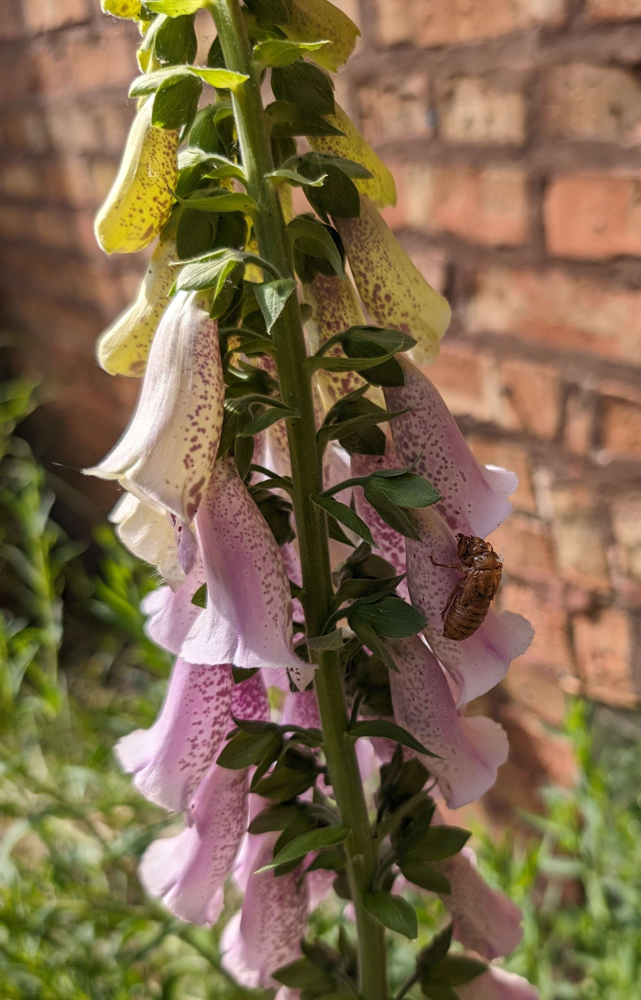

Toxic garden
I am a hobiest gardener, I grow some herbs, vegitables, berries, and decorative plants but the plants I find the most interesting are the toxic ones. Most toxic plants you will typically find for sale exist in the decorative catigory but some are grown for industrial purposes or for cullinary use after proper processing. On this page you will find a few examples of poisinous plants that I personally grow along with a little bit about their toxic proerties and potential uses.
-
Foxglove

Foxglove is one of my favorite flowers and it is the pant that got me intrrested in toxic plants in general